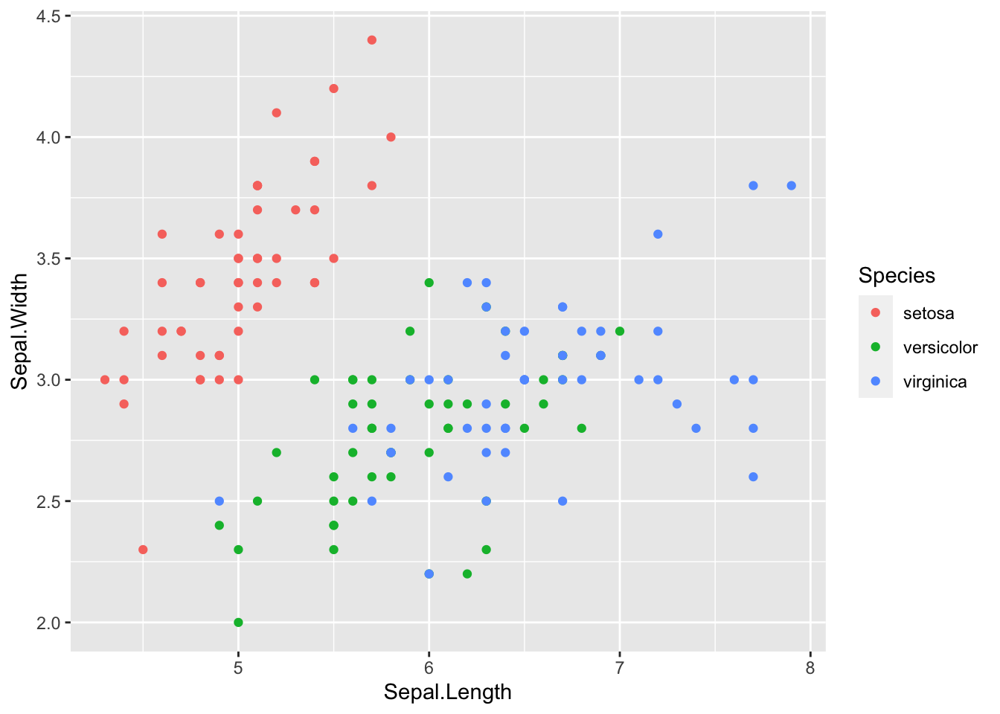

04-plotting
nilseling
2020-05-17
Last updated: 2020-05-18
Checks: 6 1
Knit directory: Session_5-7/
This reproducible R Markdown analysis was created with workflowr (version 1.6.2). The Checks tab describes the reproducibility checks that were applied when the results were created. The Past versions tab lists the development history.
The R Markdown file has unstaged changes. To know which version of the R Markdown file created these results, you’ll want to first commit it to the Git repo. If you’re still working on the analysis, you can ignore this warning. When you’re finished, you can run wflow_publish to commit the R Markdown file and build the HTML.
Great job! The global environment was empty. Objects defined in the global environment can affect the analysis in your R Markdown file in unknown ways. For reproduciblity it’s best to always run the code in an empty environment.
The command set.seed(20200501) was run prior to running the code in the R Markdown file. Setting a seed ensures that any results that rely on randomness, e.g. subsampling or permutations, are reproducible.
Great job! Recording the operating system, R version, and package versions is critical for reproducibility.
Nice! There were no cached chunks for this analysis, so you can be confident that you successfully produced the results during this run.
Great job! Using relative paths to the files within your workflowr project makes it easier to run your code on other machines.
Great! You are using Git for version control. Tracking code development and connecting the code version to the results is critical for reproducibility.
The results in this page were generated with repository version 378d254. See the Past versions tab to see a history of the changes made to the R Markdown and HTML files.
Note that you need to be careful to ensure that all relevant files for the analysis have been committed to Git prior to generating the results (you can use wflow_publish or wflow_git_commit). workflowr only checks the R Markdown file, but you know if there are other scripts or data files that it depends on. Below is the status of the Git repository when the results were generated:
Ignored files:
Ignored: R/.DS_Store
Ignored: R/Session_1/Session_1.nb.html
Ignored: R/Session_2/Session_2.nb.html
Ignored: R/Session_3/Session_3.nb.html
Ignored: R/Session_4/.DS_Store
Ignored: R/Session_4/Session_4.nb.html
Ignored: R/Session_5-7/.Rhistory
Ignored: R/Session_5-7/.Rproj.user/
Ignored: R/Session_5-7/data/iris.rds
Unstaged changes:
Modified: R/Session_5-7/analysis/04-plotting.Rmd
Modified: R/Session_5-7/analysis/_site.yml
Modified: R/Session_5-7/analysis/about.Rmd
Modified: R/Session_5-7/analysis/index.Rmd
Note that any generated files, e.g. HTML, png, CSS, etc., are not included in this status report because it is ok for generated content to have uncommitted changes.
These are the previous versions of the repository in which changes were made to the R Markdown (R/Session_5-7/analysis/04-plotting.Rmd) and HTML (R/Session_5-7/docs/04-plotting.html) files. If you’ve configured a remote Git repository (see ?wflow_git_remote), click on the hyperlinks in the table below to view the files as they were in that past version.
| File | Version | Author | Date | Message |
|---|---|---|---|---|
| Rmd | 378d254 | nilseling | 2020-05-18 | Pheatmap and cowplot |
| Rmd | d2ebc75 | nilseling | 2020-05-18 | Added barplot |
| Rmd | d577d27 | nilseling | 2020-05-17 | Boxplot section |
| Rmd | ac330b1 | nilseling | 2020-05-17 | Added PCA plot |
| Rmd | 1dc1c09 | nilseling | 2020-05-17 | Done with simple scatterplot |
| Rmd | 5a885f9 | nilseling | 2020-05-17 | Beginning of ggplot2 session |
Introduction
In todays session, we will go through a number of common plot types and will learn how to generate them using ggplot2 and other packages of the “ggverse”. For simplicity, I will again use the iris dataset and will use this to highlight a couple of different plots.
Load data and libraries
data(iris)
library(ggplot2)As a reminder, the general ggplot2 call looks like this:
ggplot(data = ) +
Scatterplot
We will start off with a very simple scatter plot displaying the Sepal.Length versus the Sepal.Width entry:
p1 <- ggplot(data = iris) +
geom_point(aes(x = Sepal.Length, y = Sepal.Width, colour = Species))
p1
For simple tasks, we can also use the “quickplot” qplot function:
qplot(x = Sepal.Length, y = Sepal.Width, data = iris, color = Species)
Adding other layers
We can now add other layers to the plot. Since we can see a linear relationship between Sepal width and Sepal length, we can add some regression lines:
p1 <- p1 + geom_smooth(aes(x = Sepal.Length, y = Sepal.Width, colour = Species),
method = "lm", formula = "y ~ x")
p1By default, geom_smooth will add the 95% confidence interval to the regression line. By specifying colour = Species, a linear regression fit is perform for each level/group of Species.
Facetting
To facilitate visual representation of the three groups, facetting can split the panels based on certain levels:
p1 <- p1 + facet_wrap(. ~ Species)
p1As a reminder, facet_wrap is used when splitting by a single variable. facet_grid is used when splitting based on multiple variables.
Changing the colour scale
Next, we want to change the colour to a more appealing scale. There are multiple ways to selecting colours. I like the RColourBrewer and ggsci packages for discrete colour choice: Here are some nice resources:
Here, I will use the Nature Publishing Group colour suggestions from the ggsci package:
library(ggsci)
p1 <- p1 + scale_colour_npg()
p1The colours look nicer bu still not perfect. It is often advisable to store the colour mapping in form of a vector:
library(RColorBrewer)
display.brewer.all(type = "qual", colorblindFriendly = TRUE)
cur_palette <- brewer.pal(n = 3, name = "Set2")
colour_vec <- c(setosa = cur_palette[1],
versicolor = cur_palette[2],
virginica = cur_palette[3])
p1 <- p1 + scale_colour_manual(values = colour_vec)Scale for 'colour' is already present. Adding another scale for 'colour',
which will replace the existing scale.p1We have now changed the colour of the points but are still not quite happy with the plot.
Changing the theme and aesthetics
First, we might want to use nicer looking points. For this, we will unfortunatelly need to re-create the whole plot:
p1 <- ggplot(data = iris) +
geom_point(aes(x = Sepal.Length, y = Sepal.Width, fill = Species),
shape = 21, size = 2) +
geom_smooth(aes(x = Sepal.Length, y = Sepal.Width, colour = Species),
method = "lm", formula = "y ~ x") +
facet_wrap(. ~ Species,
labeller = labeller(Species = c("setosa" = "Setosa", # Re-label facet names
"versicolor" = "Versicolor",
"virginica" = "Virginica"))) +
scale_fill_manual(values = colour_vec, name = "Iris species",
labels = c("Setosa", "Versicolor", "Virginica")) +
scale_colour_manual(values = colour_vec, name = "Iris species",
labels = c("Setosa", "Versicolor", "Virginica"))
p1Of note, the “colour” of shape 21 has to be adjusted using the fill argument.
Finally, we will change the appearance of the plot:
p1 <- p1 + xlab("Sepal Width") + ylab("Sepal Length") +
theme(panel.background = element_blank(), # removes gray colour from the background
panel.border = element_rect(fill = NA), # Puts a border around the panels
legend.background = element_rect(colour = "black"), # puts a border around the legend
legend.position = c(.67, .80), # Re-positions the legend
axis.line = element_line(), # Adds axis line
axis.ticks = element_line(colour = "black"), # Re-colours axis ticks
axis.text = element_text(colour = "black", size = 9), # Re-colours and re-sizes axis tick labels
axis.title = element_text(colour = "black", size = 12), # Re-colours and re-sizes axis title
strip.background = element_blank(), # Remove background from strip
strip.text = element_text(colour = "black", size = 12)) # Re-colours and re-sizes strip text
p1
There are nearly infinite adjustable parameters associated to theme: https://ggplot2.tidyverse.org/reference/theme.html
I commonly call the entire ggplot2 function in one call:
p1 <- ggplot(data = iris) +
geom_point(aes(x = Sepal.Length, y = Sepal.Width, fill = Species),
shape = 21, size = 2) +
geom_smooth(aes(x = Sepal.Length, y = Sepal.Width, colour = Species),
method = "lm", formula = "y ~ x") +
facet_wrap(. ~ Species,
labeller = labeller(Species = c("setosa" = "Setosa",
"versicolor" = "Versicolor",
"virginica" = "Virginica"))) +
scale_fill_manual(values = colour_vec, name = "Iris species",
labels = c("Setosa", "Versicolor", "Virginica")) +
scale_colour_manual(values = colour_vec, name = "Iris species",
labels = c("Setosa", "Versicolor", "Virginica")) +
xlab("Sepal Width") + ylab("Sepal Length") +
theme(panel.background = element_blank(),
panel.border = element_rect(fill = NA),
legend.background = element_rect(colour = "black"),
legend.position = c(.67, .80),
axis.line = element_line(),
axis.ticks = element_line(colour = "black"),
axis.text = element_text(colour = "black", size = 9),
axis.title = element_text(colour = "black", size = 12),
strip.background = element_blank(),
strip.text = element_text(colour = "black", size = 12))
p1Custom PCA plot
Two sessions ago, we have created a custom function that plots a certain pca. We can now use this to display a pca of the iris dataset:
source("code/auxiliary.R")
cur_pca <- prcomp(iris[,1:4], scale. = TRUE)
p2 <- my_plotPCA(cur_pca, colour_by = iris$Species)
p2
Since we coded the function in a way that a ggplot2 object is returned, we can now make it look prettier:
p2 <- p2 + scale_colour_manual(values = colour_vec, name = "Iris species",
labels = c("Setosa", "Versicolor", "Virginica")) +
coord_fixed() +
theme(panel.background = element_blank(),
legend.background = element_rect(colour = "black"),
legend.position = c(1, 1),
legend.justification = c("right", "top"),
axis.line = element_line(),
axis.ticks = element_line(colour = "black"),
axis.text = element_text(colour = "black", size = 9),
axis.title = element_text(colour = "black", size = 12))
p2
Boxplot
Next, we will create a simple boxplot to visualize ggplot2’s functionality:
p3 <- ggplot(iris) +
geom_boxplot(aes(x = Species, y = Sepal.Length, fill = Species),
outlier.colour = NA, notch = TRUE) +
geom_jitter(aes(x = Species, y = Sepal.Length), width = 0.1, alpha = 0.7) +
scale_fill_manual(values = colour_vec, name = "Iris species",
labels = c("Setosa", "Versicolor", "Virginica")) +
xlab("") +
scale_x_discrete(breaks = c("setosa", "versicolor", "virginica"),
labels = c("Setosa", "Versicolor", "Virginica")) +
theme(panel.background = element_blank(),
legend.background = element_rect(colour = "black"),
legend.position = c(0.05, 0.95),
legend.justification = c("left", "top"),
axis.line = element_line(),
axis.ticks = element_line(colour = "black"),
axis.text.y = element_text(colour = "black", size = 9),
axis.text.x = element_text(colour = "black", size = 12),
axis.title = element_text(colour = "black", size = 12))
p3Of note: the “notch” indicates the 95% confidence interval of the median. The two “hindges” represent the 25% and 75% quantiles of the distribution, the upper whisker extends to the value not larger than upper hinge + 1.5 times the interquartile range of the values and the lower whisker extends to the value not smaller than lower hinge - 1.5 times the IQR.
Barplot
Next, we’ll create a barplot visualizing the different measurements for each species. We also want to add the standard error of the mean to the bar chart - for this we need to modify the data.frame a bit:
library(tidyverse)── Attaching packages ──────────────────────────────────────────────────────────────────────────────────────────────────────── tidyverse 1.3.0 ──✓ tibble 3.0.1 ✓ dplyr 0.8.5
✓ tidyr 1.0.2 ✓ stringr 1.4.0
✓ readr 1.3.1 ✓ forcats 0.5.0
✓ purrr 0.3.4 ── Conflicts ─────────────────────────────────────────────────────────────────────────────────────────────────────────── tidyverse_conflicts() ──
x dplyr::filter() masks stats::filter()
x dplyr::lag() masks stats::lag()cur_dat <- iris %>%
pivot_longer(cols = colnames(iris)[1:4]) %>%
group_by(Species, name) %>%
summarise(mean_val = mean(value),
sd_val = sd(value),
n_val = length(value),
se_val = sd_val/sqrt(n_val),
ci_t = qt(0.975, df = n_val - 1) * se_val)Now, we can plot the barplot:
# Re-order the levels
cur_dat$Measurement <- factor(cur_dat$name, levels = c("Petal.Width", "Petal.Length", "Sepal.Width", "Sepal.Length"))
p4 <- ggplot(cur_dat, aes(x = Species, y = mean_val, fill = Measurement)) +
geom_bar(position = position_dodge(),
stat = "identity") +
geom_errorbar(aes(ymin = mean_val - ci_t, ymax = mean_val + ci_t),
position = position_dodge(0.9), width = 0.2) +
scale_fill_brewer(palette = "Paired",
labels = c("Petal Width", "Petal Length", "Sepal Width", "Sepal Length")) +
labs(x = "", y = "Measured value [cm]") +
scale_x_discrete(breaks = c("setosa", "versicolor", "virginica"),
labels = c("Setosa", "Versicolor", "Virginica")) +
theme(panel.background = element_blank(),
legend.background = element_rect(colour = "black"),
legend.position = c(0.05, 0.95),
legend.justification = c("left", "top"),
axis.line = element_line(),
axis.ticks = element_line(colour = "black"),
axis.text.y = element_text(colour = "black", size = 9),
axis.text.x = element_text(colour = "black", size = 12, angle = 45, hjust = 1),
axis.title = element_text(colour = "black", size = 12))
p4
Heatmap
Finally, we can visualize the data points in form of a heatmap. I personally like to use pheatmap but the ComplexHeatmap package is also very nice:
library(pheatmap)
cur_dat <- t(iris[1:4])
colnames(cur_dat) <- rownames(iris)
p5 <- pheatmap(cur_dat, scale = "row",
color = colorRampPalette(c("dark blue", "white", "dark red"))(100),
annotation_col = data.frame(row.names = colnames(cur_dat),
Species = iris$Species),
show_colnames = FALSE,
annotation_colors = list(Species = colour_vec),
labels_row = sub("\\.", " ", rownames(cur_dat)))
Stitiching it together
In the last part, I will show you how to put everything together using the cowplot or patchwork package:
First, I will show you how cowplot works. I will directly create nested plot_grid objects.
library(cowplot)
********************************************************Note: As of version 1.0.0, cowplot does not change the default ggplot2 theme anymore. To recover the previous behavior, execute:
theme_set(theme_cowplot())********************************************************upper_row <- p1
middle_row <- plot_grid(p2 + theme(legend.title = element_text(size = 10),
legend.text = element_text(size = 8),
legend.key.size = unit(0.1, "cm"),
legend.position = c(1, 1.3)),
p3 + theme(legend.title = element_text(size = 10),
legend.text = element_text(size = 8),
legend.key.width = unit(0.3, "cm")),
p4 + theme(legend.title = element_text(size = 8),
legend.text = element_text(size = 6),
legend.position = c(0.05, 1.1),
legend.key.size = unit(0.3, "cm")),
ncol = 3, labels = c("B", "C", "D"))
bottom_row <- p5$gtable
final <- plot_grid(upper_row, middle_row, bottom_row, nrow = 3, labels = c("A", "", "E"))
ggsave(filename = "docs/final_figures/Fig_1.pdf", plot = final, width = 210, height = 290, units = "mm")I have tried assembling the same figure using patchwork but didn’t succeed :( However, check it out at: patchwork
sessionInfo()R version 4.0.0 (2020-04-24)
Platform: x86_64-apple-darwin17.0 (64-bit)
Running under: macOS Catalina 10.15.4
Matrix products: default
BLAS: /Library/Frameworks/R.framework/Versions/4.0/Resources/lib/libRblas.dylib
LAPACK: /Library/Frameworks/R.framework/Versions/4.0/Resources/lib/libRlapack.dylib
locale:
[1] en_US.UTF-8/en_US.UTF-8/en_US.UTF-8/C/en_US.UTF-8/en_US.UTF-8
attached base packages:
[1] stats graphics grDevices utils datasets methods base
other attached packages:
[1] cowplot_1.0.0 pheatmap_1.0.12 forcats_0.5.0 stringr_1.4.0
[5] dplyr_0.8.5 purrr_0.3.4 readr_1.3.1 tidyr_1.0.2
[9] tibble_3.0.1 tidyverse_1.3.0 RColorBrewer_1.1-2 ggsci_2.9
[13] ggplot2_3.3.0 workflowr_1.6.2
loaded via a namespace (and not attached):
[1] tidyselect_1.0.0 xfun_0.13 splines_4.0.0 haven_2.2.0
[5] lattice_0.20-41 colorspace_1.4-1 vctrs_0.2.4 generics_0.0.2
[9] htmltools_0.4.0 yaml_2.2.1 mgcv_1.8-31 rlang_0.4.6
[13] later_1.0.0 pillar_1.4.4 glue_1.4.0 withr_2.2.0
[17] DBI_1.1.0 dbplyr_1.4.3 readxl_1.3.1 modelr_0.1.7
[21] lifecycle_0.2.0 cellranger_1.1.0 munsell_0.5.0 gtable_0.3.0
[25] rvest_0.3.5 evaluate_0.14 labeling_0.3 knitr_1.28
[29] httpuv_1.5.2 fansi_0.4.1 broom_0.5.6 Rcpp_1.0.4.6
[33] promises_1.1.0 scales_1.1.0 backports_1.1.6 jsonlite_1.6.1
[37] farver_2.0.3 fs_1.4.1 hms_0.5.3 digest_0.6.25
[41] stringi_1.4.6 grid_4.0.0 rprojroot_1.3-2 cli_2.0.2
[45] tools_4.0.0 magrittr_1.5 crayon_1.3.4 whisker_0.4
[49] pkgconfig_2.0.3 ellipsis_0.3.0 Matrix_1.2-18 xml2_1.3.2
[53] reprex_0.3.0 lubridate_1.7.8 rstudioapi_0.11 assertthat_0.2.1
[57] rmarkdown_2.1 httr_1.4.1 R6_2.4.1 nlme_3.1-147
[61] git2r_0.27.1 compiler_4.0.0